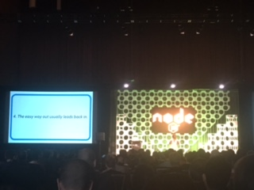
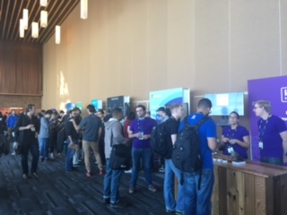
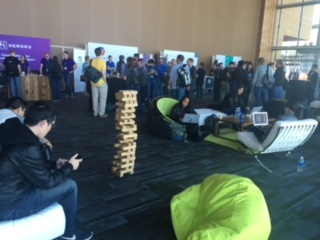

NodeJS Conference 2017
Thoughts and notes
- General notes
- Venue
- Talks
- Dana
- Ali
General notes
We should formulate these general notes together. Maybe have to slides if our impression of the conference is very different.
- Very sponsor oriented
- 6 opening keynotes and 7 closing notes (usually there's one opening and one closing)
- Most of the talks were promoting one module or other
- Very fast paced: 30 minutes sessions with 10 minutes breaks in between
- Refreshing to see diversity among speakers, note speakers, and participants
- Sad to see lots of inexperienced presenters
- Code & Learn session !!! dissapointing !!!!
Venue
- Canada Place in the heart of Vancouver
- Vancouver city is an awesome blend of nature and cosmopolitan
- Everybody should visit at least once
The Conference
|  |  |
| One of the many opening key notes |
The vendor area |
|  | |
| Nerd Jenga | Jello shots |
The Conference (cont.)
Ali at the opening key noteThe City
Panarama of Vancouver from Stanley ParkThe City (cont.)
 Edge of Event Center and view of mountains
Edge of Event Center and view of mountains
The City (cont.)
| Steam clock in Gastown | Vancouver Lookout | Vancouver Harbor |
Schedule
Ali's talks
- Logging - Winston was updated to use streams, use `winston@next`!
- Microservices - use our yeoman nodeserver generator `yo nodeserver`!
- Don't Starve the Event Loop - find a balence between all the ways to optimize
- JS Ecosystem - tips and tricks within JS and node
- Hooray Arrays - Everything and more about arrays
- Future is Serverless, what that means for node - use funcpack to configure web pack on a project
- Memory Leaks - how to debug a memory leak
- Closures - how to and when to
- Async Hooks - a module to help you track async functions
- *Keynotes - what's next for node
Your Brain is Conspiring Agasint You
Tips and tricks to help make us better developers
http://jenna.is/slides/at-nina.pdf
- Take breaks!
- Ask questions that counter our hypothesis
- Debug with a partner
- Bad at estimating - under/over
- Motivated by loss
- Helpless to the processing power of our brains
- Be more empathetic
- Reliant on our own examples
- Ikea Effect - don't re-invent the wheel
- Coctail Party Effect - process everything
- Imposter Syndrome (sucessful women)
Kill All Humans
How to deal with npm versions, releases, and updates
- Semantic Versioning
- breaking.feature.fix
- Break versions not code!
- Semantic Release - give you a rigid setup for versioning and releasing
- `npm outdated`
- greenkeeper.io - dependency management with travis CI
- Do not do any security updates without up-to-date dependencies
- Create a schedule for dependency updates
The State of Node Security
Where node stands security-wise
- Examples of security attacks:
- Directory traversal
- Cross-site scripting (angular)
- typosquatting
- Regular Expression denial of service
- Create public facing disclosure policy
- Create a `security.txt` file that defines how users can report security issues
- Deprecate the version with the security issue
- Use Snyk, or nsp
Dana's talks
Functionality Abuse:
The Forgotten Class of Attacks
- Nwokedi Idika, Google
- We are primed to think that web security issues are by implementation flaws and are a given
- Importance of having security policy
- Threat modeling
- Common security issues: SQL injections, cross site scripting (XSS), "code issues"
Node And Learn:
How to Create a Local Node.js Community
- Yosuke Furukawa, Recruit Technologies
- The speaker spoke from his experience in creating a diverse Nodejs community in Japan
- The role of a community is to:
- Keep you motivated to continue to learn and contribute to the Nodejs ecosystem
- Nurture Javascript beginners
- A community should strive to be more global and more interactive
- Advice: create a Node Discussion to create a stable node community
- Japan Nodejs community: doubled from 2014 to 2016
The JS Ecosystem: Making Sense of the Madness
- Ethan Brown, Pop Art
- Ecosystem
- Web server side: Express, Node
- Web apps side: Angular, React, Vue, Webpack, Babel
- Languages that compile to JS: ClosureScript, TypeScript, Elm
- IoT space: Node, IoT
- Native development: ReactNative (react), NativeScript (angular)
- Other: WebAssembly
- ES6 - syntactic sugar to look for: Arrays functions, Object spread, Destructuring, property shorthand, promises, string templates, async/awais, class fields, export/import modules
- Paradigms: functional programming
- One way data binding: Redus
- Immutability (Natural fit for functional programming)
Understanding and Debugging Memory Leaks in Your Node.js Applications
- Ali Sheikh, Google
- Memory leaks happen when expected short living objects are attached to long lived ones.
- Garbage Collection should remove only stuff that’s not used anywhere. Unfortunately it is not always effective.
- Debugging tools for JavaScript leaks:
- process.memoryUsage()
- heap snapshots (Memory tab in chrome)
- Allocation timeline
- V8 Heap Statistics
- Native leaks: native addons, nodejs code bits written in C++, V8
Other sessions
- A Brief History of Streams - Jessica Quynh Tran
- It was more of a philosophical talk, rather than techinical
- Programming Best Practices: Memory Efficiency with Closures [I] - Gireesh Punathil, IBM India Pvt Ltd
- Keyword: scope
- Deck
- WebAssembly and the Future of the Web [I] - Athan Reines, Independent Software Engineer
- Compiler that takes other languages and converts them to an assembly which is then converted to web format
- Text format and binary format
- Value types: i32, f32, i64, f64
- Github
Conclusion
- It's the second NodeJS Interactive conference and there's still lots of improvement that's needed.
- We should present Sugarcoat at the next NodeJs conference.
Why not? - Would I go again?
- Dana: Probably yes, but only after I get more Nodejs experience.
- Ali: